Contents
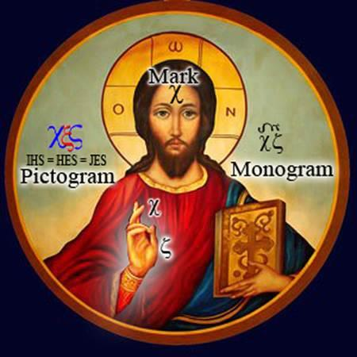
The False Messiah is “the lawless one”. Yahushua overthrows this “false image” of himself with the “power of his testimony” which is the spirit of prophecy.
Tas’loniqim Bet/2Th 28And then the lawless one shall be revealed, whom the Master shall consume with the Spirit of His mouth [Yeshayahu/Isa_11:4] and bring to naught with the manifestation of His coming.
Chazon/Revelation 19:10 “Worship יהוה! For it is the Spirit of prophecy (יהוה’s prophets) who bears testimony to Yahushua."
Mosheh prophesied Yahushua as the greatest prophet who will teach The Torah/Law.
Ma’asei/Acts 3:22 For Mosheh said, “יהוה your Elohim will raise up for you a prophet like me from among your own people; you must listen to everything he tells you. Yochanan/John 5:46 If you believed Mosheh, you would believe me, for he wrote about me.
The Torah/Law and the Festivals of יהוה are prophesied to be abolished and changed to pagan rituals by the False Messiah.
Dani’el/Daniel 724And the ten horns are ten sovereigns from this reign. They shall rise, and another shall rise after them, and it is different from the first ones, and it humbles three sovereigns, 25and it (The False Messiah) speaks (to the hearts of man) words against the Most High, and it wears out the set-apart ones of the Most High, and it intends to change appointed times and law (of יהוה) and they are given into its hand for a time and times and half a time.
The False Messiah is a deceiver who does not come “in the name of יהוה”, but rather in his own name giving glory to 3 pagan gods (Hesus, Horus, Krishna). Yahushua comes in the name of יהוה, and no one who denies this will ever see Yahushua again.
Mattithyahu/Matthew 21:9 "Hosanna to the Son of David!" "Blessed is he who comes in the name of יהוה!" "Hosanna in the highest heaven!"
Mattithyahu/Matthew 23:39 For I tell you, you will not see me again until you say, 'Blessed is he who comes in the name of יהוה.'"
Yochanan/John identified Jesus Christ as the Beast
Chazon/Revelation 13 - The Beast out of the Sea
16 The dragon stood on the shore of the sea. And I saw a beast coming out of the sea…17 so that they could not buy or sell unless they had the mark, which is the name of the beast or the number of its name. 18 This calls for wisdom. Let the person who has insight calculate the number of the beast, for it is the number of a man. That number is 666.
Yochanan/John particularly and extraordinarily names Jesus Christ as the Antichrist. Doesn’t look like it in English, does it?
The reason for this is due to a serious mistake in the English translation of this verse. Here again, we are warned that to understand the “name of the beast”, requires those who have the wisdom and insight into spiritual things (verse 18).
We are faced with a ‘mystery’. We will apply our knowledge and understanding to this passage and accurately recognize Jesus Christ as the name of the beast and show what Yochanan/John meant and said in Chazon/Revelation 13.
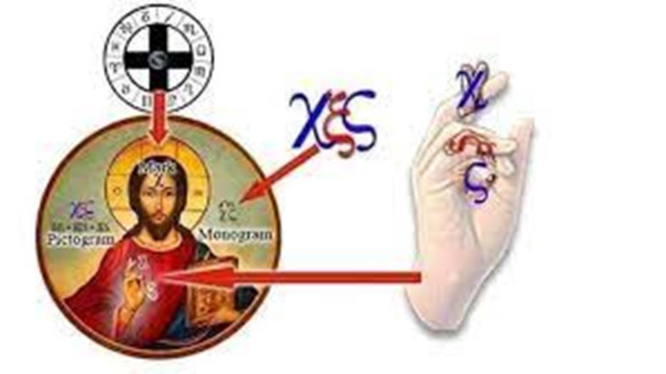
Chazon/Revelation 13 - The Beast out of the Sea 13 The dragon stood on the shore of the sea. And I saw a beast coming out of the sea (sea serpent )…17 so that they could not buy or sell unless they had the mark ( ), which is the name of the beast or (rather) the symbol of its name. 18 This calls for wisdom (to discern the Christogram). Let the person who has (spiritual) eyes to see reckon up the (pictogram of the) symbol of the beast that identifies him, for it is the symbol of a man.
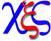
That symbol is
No discussion of The False Messiah would be complete without revealing the identity of the beast and the numerical designation of his name. Once more, The Christian Church leads us to think that The Mark of the Beast is 666, when in reality it is the spiritual mark of The Trinity, represented by an X on the forehead (signifying the belief that Jesus is Elohim in human form), which is in contrast to The Mark of יהוה (which indicates the belief in the oneness of Elohim with no other).
In truth, the number 666 holds no significance whatsoever. This is where wisdom and discernment play a role. Yochanan/John didn't record a specific "number"; instead, he wrote down the 3 Greek letters representing the symbol of Jesus Christ, excluding all others in history.
This is the reason why the pagan translators decided to delete the symbol and replace it with a number, which directly goes against the explicit instruction to not make any additions to or take away from the book. This is just one of the seals that are in the book of Chazon/Revelation.
666 is a violation of scripture not to “add to or subtract from”.
Below is what Chazon/Revelation 13 looks like in the Greek language:
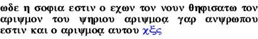
The last 3 letters at the end is what Yochanan/John wrote not 666. So the number 666 in our English Bible is misleading, as it only represented the gematria (or the associated number) of what Yochanan/John actually wrote in Greek letters , , and , (Chi, Xi and Sigma). Translators converted the Greek letters into the number 666 because they mistranslated the meaning of the Greek word arithmos in Chazon/Rev. 13 as “number”. Then they subtracted and added 666 which is forbidden to do! They should never have changed the SYMBOL to a number in the first place! The Translators should have left this ‘symbol’ in our English Bibles as so that at “the time of the end” we would recognize the mark, the monogram, and the pictogram of the False Messiah.
The numeral 666 is not directly related to the original text written by Yochanan/John, as he did not record a specific number but rather a symbolic representation. Our current English translation of Chazon/Revelation 13 was done by unoriginal translators who were not spiritually wise or insightful as Yochanan/John had advised, thus leaving us in ignorance until the present time. Let's shed some light on Chazon/Revelation 13 with some wisdom from יהוה and spiritual understanding.
Yochanan/John saw the SYMBOL not a NUMBER
In Chazon/Revelation 13, Yochanan/John saw a vision of the mark, a symbol representing the serpent, a pictogram, and the monogram of Jesus Christ. Yochanan/John neither witnessed nor penned down a numerical value. Yochanan/John observed a Christogram, a symbol representing Jesus Christ.
http://en.wikipedia.org/wiki/Christogram
A Christogram is a monogram or combination of Greek letters that forms an abbreviation for the name of Jesus Christ, traditionally used as a Christian symbol. Christogram comes from the Latin phrase "Christi Monogramma", meaning "monogram of Christ". Different types of Christograms are associated with the various traditions of Christianity
The Catholic Encyclopedia admits that XS is one of the standard Christograms:
Catholic Encyclopedia - http://www.newadvent.org/cathen/07649a.htm IHS A monogram of the Jesus Christ. From the third century, the names of our Savior are sometimes shortened, particularly in Christian inscriptions (IH and XP, for Jesus and Christus). In the next century, the "sigla" (chi-rho) occurred not only as an abbreviation but also as a symbol. From the beginning, however, in Christian inscriptions the nomina sacra, or names of Jesus Christ, were shortened by contraction, thus IC / XC (which is IS / XS today) or IHS and XPS for Iesous Christos.
Yochanan/John saw in his vision one of those different types of monograms or symbols of Jesus Christ. There are many Christograms used throughout history, and all of them use different combinations of the Greek letters in Christos ΧΡΙΣΤΟS. The monogram that Yochanan/John wrote down is unique using the Greek letter that symbolizes the serpent . Yochanan/John used the first and last Greek letters in ΧΡΙΣΤΟS (the most common symbol in history for Jesus Christ) with the letter sigma in the middle:
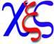
We read below these 3 Greek characters represent the pagan Greek title Christos ΧΡΙΣΤΟS used of all pagan demi-gods after which Jesus Christ was fashioned by Constantine. But this ONE monogram XS includes the symbol of the sea serpent mentioned in Chazon/Revelation 13:1…
"Number in Scripture" - Dr E W Bullinger pg 49 Indeed, the expression of this number, , consists of the initial and final letters of the word ΧΡΙΣΤΟS (Christos), Christ, the X and V, with the symbol of the serpent between them, X—x—V.. The middle letter represents the symbol of the serpent and is intimately connected with the ancient Egyptian Mysteries.
Bear in mind that we are still after the 'Name' of this opposing force against the True Elohim יהוה, which if this Scripture in Chazon/Rev. 13:16-18 has any reference to it, is linked with this mysterious symbol linked to paganism - the symbol of the serpent which Chazon/Revelation declares gives the False Messiah his power, authority, and throne on Earth. Does ‘arithmos’ mean ‘number’ or ‘symbol’ in the context of Chazon 13?
Throughout history, the name Jesus Christ has been represented by symbols (not numbers), as Yochanan/John demonstrated by writing down the symbol in Chazon/Revelation Chapter 13:18.
http://en.wikipedia.org/wiki/Christogram
A Christogram is a monogram or combination of Greek letters that forms an abbreviation for the name of Jesus Christ, traditionally used as a Christian symbol.
The Catholic Encyclopedia admits that these Christograms are symbols not numbers:
Catholic Encyclopedia - http://www.newadvent.org/cathen/07649a.htm IHS A monogram of the Jesus Christ. Since the third century the names of our Savior is sometimes shortened, particularly in Christian inscriptions (IH and XP, for Jesus and Christus). In the next century the "sigla" (chi-rho) occurs not only as an abbreviation but also as a symbol.
Arithmos (ariqmoV) mistranslated
The word arithmos translated as a number in Chazon/Revelation 13:18 should have been translated as a symbol or the “figurative representation” that “lifts up” a specific man to “identify” him by name… such as a mark, pictogram, or monogram. In Chazon/Revelation 13:18 the Greek word translated number in English is Strong’s #706 arithmos below
706 arithmos ar-ith-mos'
From root word - airo 142; a number (as reckoned up):--number.
Arithmos can mean “number” because a number IS a symbol as in the sense of; a symbol that represents a specific calculated measurement of units. Arithmos can also mean; “representation” or “symbol” in the sense of “reckoned up” to identify something. The words “representation” and “symbol” are English synonyms of “number” see… http://thesaurus.com/browse/number
Given that Yochanan/John wrote a symbol not a number in context of Chazon/Revelation 13:18, “symbol” would be a much more accurate English word for the Greek word arithmos. Arithmos as used by Yochanan/John is in the sense of “representation” or “symbol” used to “reckoned up” and identify something in this case The False Messiah’s name.
The translators should have used an English word, found a synonym that properly communicated what Yochanan/John was saying. To understand which word (number or symbol) better represents arithmos in this specific case, the translators should have consulted the ROOT WORD of arithmos which is airo. Airo gives us a full sense of what Yochanan/John was saying, given he wrote down a symbol not a number. Arithmos is derived from the Greek root word airo Strong’s #142 below:
142 airo ah'-ee-ro a primary root word; to lift up; by representation, to take up or away; figuratively
The word arithmos in conjunction with its root airo implies a “symbol” that is used “to figuratively lift up; by representation” not a mathematical symbol (number) used to calculate. Arithmos is used this way by Yochanan/John in Chazon/Revelation 13:18, and means a symbol or a “figurative representation” that “identifies” the name of the False Messiah i.e. a mark, pictogram, or monogram! That is why Yochanan/John did not write down a number after arithmos he put down 3 Greek letters that is used as a symbol that figuratively represents Jesus Christ…
The reason the number 666 appears in our English Bibles and not his symbol is because the translators mistranslated arithmos as number instead of symbol. Then the translators took the liberty of changing the text and converting into the number 666 using the system of Gematria. This was a grave error in translation. They should have left the text alone, remember the warning not to add to or subtract from the Book of Chazon/Revelation? Well in this case the translators did both!
Chazon/Revelation 22:1818I testify to everyone who hears the words of the prophecy of this book: if anyone adds to them, יהוה will add to him the plagues which are written in this book; 19and if anyone takes away from the words of the book of this prophecy, יהוה will take away his part from the tree of life and from the holy city So arithmos, as used by Yochanan/John (in context) should have been translated as symbol in the sense of a “figurative representation to lift up and identify” the name of the False Messiah. That is the full meaning and how it is used by Yochanan/John in Chazon/Revelation 13:18. Yochanan/John put down the Greek symbol , the “figurative representation” that “lifts up” and identifies the name of the coming False Messiah Jesus Christ.
It is no wonder Yochanan/John warned us we would need “wisdom and insight” to figure this one out because our translators failed us yet again. What Yochanan/John was actually saying in Chazon/Revelation 13 and the proper translation is this:
Chazon/Revelation 13 - The Beast out of the Sea
18 This calls for wisdom. Let the person who has insight reckon up the symbol of the beast, for it is the symbol of a man that identifies him. That symbol is
This “figurative representation that lifts up to identify” i.e. is the symbol of Jesus Christ exclusively no other figure in human history uses this symbol.
Do these Greek letters point us uniquely to the name “Jesus” and “Christ”?
Throughout history, the Christian Church has used various combinations of Greek letters in Christos ΧΡΙΣΤΟS to represent Jesus Christ as SYMBOLS;
Christianity does not now (and has never) used 666 or numbers. Sometimes we see letters in Christos in combination with letters from other titles used as the monogram for Jesus Christ. For instance, the famous chi-rho monogram (a symbol which became part of the official standard of the emperor Constantine) was made from the first two letters of Christos ΧΡΙΣΤΟS. Other symbols use the first and last letter ΧΡΙΣΤΟS, or just the first Χ, and so on.
http://en.wikipedia.org/wiki/Chi_Rho The Chi Rho is one of the earliest forms of the Christogram and is used by some Christians. It is formed by superimposing the first two (capital) letters chi and rho (ΧΡ) of the Greek word "ΧΡΙΣΤΟS" =Christ in such a way to produce the monogram. Although not technically a Christian cross, the Chi-Rho invokes the crucifixion of Jesus, as well as symbolizing his status as the Christ.
The Chi-Rho symbol was used by the Roman emperor Constantine I. Early pagan symbols similar to the Chi Rho were the Staurogram ( ) and the IX Monogram ( )
The version of the Christogram used by Constantine is to this day emblazoned on the pagan altar of The Catholic Church. The Christogram of Constantine is also inscribed on the YMCA building below:
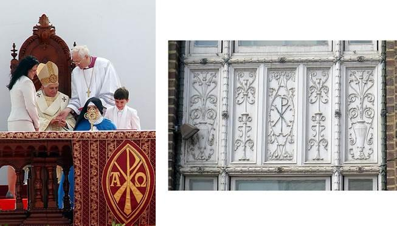
What version of the Christogram did Yochanan/John see in Rev. 13?
Most versions of the Christogram use letters in the Greek word for Christ (ΧΡΙΣΤΟS). The one Yochanan/John saw too represents the first and last letters in Christos ΧΡΙΣΤΟS or XS. XS is one of the most common Christograms throughout history which in medieval times was written as XC as C was used for the Greek letter Sigma. Anytime we see XC in paintings or murals that is equivalent to XS today as we now use S for the letter Sigma.
As I mentioned earlier the letters in a Christogram can be combined with other symbols as well to make the Christogram more meaningful. Like the one
Constantine used that is still being used today on the pagan Altar of the Catholic Church and other Christian structures. The Christogram that Yochanan/John used in Chazon/Revelation portrayed the most famous monogram for Christos (ΧΡΙΣΤΟS) with the Egyptian pagan mystery symbol of the serpent in the middle to give it more meaning.
The sea serpent is identified In Chazon/Revelation 13:1 as the “beast coming out of the sea” or sea serpent and is the source of the power, authority, and throne of The False Messiah. So when identifying that beast, Yochanan/John used the first two letters of Christos (ΧΡΙΣΤΟS) with the symbol of the serpent in the middle.
The universal symbol for the serpent throughout the ages and cultures is a serpent in an upright coil:
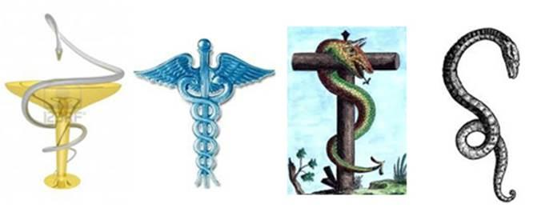
What Yochanan/John was telling us by using the standard monogram for Jesus Christ or ΧS is that the “sea serpent” or the dragon would be the source of the power, great authority and throne of the False Messiah by inserting the symbol of the serpent in between them!
Chazon/Revelation 13 And I saw a beast coming out of the sea … The dragon (serpent ) gave the beast (XS) his power and his throne and great authority.
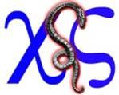
"Number in Scripture" - Dr E W Bullinger pg 49 Indeed the expression of this number, , consists of the initial and final letters of the word ΧΡΙΣΤΟS (Christos), Christ, the X and V, with the symbol of the serpent between them, X—x—V.. The middle letter represents the symbol of the serpent and is intimately connected with the ancient Egyptian Mysteries.
This is exactly what The Apostle Paul told us:
Tas’loniqim Bet/2 Thessalonians 29The coming of the lawless one (the one in whom The Law is abolished i.e. Jesus Christ) will be in accordance with how Satan works (the spirit behind
The False Messiah is the serpent ). He will use all sorts of displays of power through signs and wonders that serve the lie.
We see the Greek letters such as IC and XC (which is XS today) used as symbols for ‘Jesus Christ’ in painted mosaics the world over clearly identifying Jesus Christ as the beast Yochanan/John saw in Chazon/Revelation.
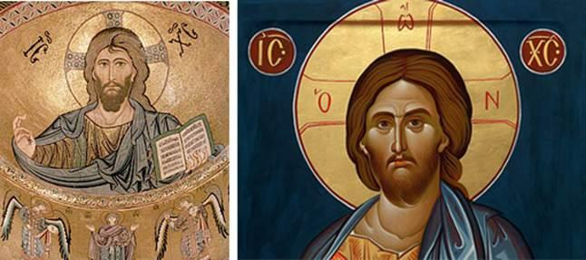
“IC XC” as written in the Hellenistic period is a Christogram, a monogram of “Jesus Christ”. When Jesus Christ is written in Greek it looks like this: ΙΗΣΟΥΣ ΧΡΙΣΤΟΣ. If we take the first and last letters of ΙΗΣΟΥΣ (“Jesus”) and ΧΡΙΣΤΟΣ (“Christ”) we are left with: ΙΣ ΧΣ. Today that would read IS XS.
Note: In handwritten Greek during the Hellenistic period (4th and 3rd centuries BC), the epigraphic form of Σ was simplified into a C-like shape, thereby giving us: IC XC. But today “at the time of the end” when Chazon/Revelation would be understood the Σ is transliterated as the letter S. Therefore all these Christograms painted world-wide if painted today would read IS / XS. XS (ΧΣ) being the Christogram used by Yochanan/John in Chazon/Revelation 13 as a symbol not a number.
These mosaics of Jesus Christ have a serpent symbol above the IC XC (which today would be IS XS). If you move that serpent symbol into the monogram below it you have the exact symbol Yochanan/John wrote in Chazon/Revelation 13:18. Remember the Greek letter Sigma Σ at the time this mosaic was painted was transliterated as a C. Today the Sigma is transliterated as an S.
This is where “wisdom” comes into play:
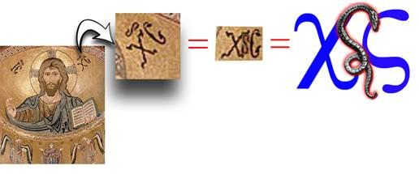
The symbol Yochanan/John saw is literally hidden in plain site as THE symbol for Jesus Christ in paintings, on mosaics that adorn cathedrals, on stain glass murals, on buildings and inscriptions the world over. In many paintings, Jesus Christ is depicted as making the same cryptic hand gestures as seen below. This hand gesture is literally the symbol of the Antichrist that Yochanan/John saw in Chazon/Revelation… XS (depicted as XC as the Sigma was transliterated as a C in the middle ages). We see Jesus Christ represented below with the blazing sun (sungod) behind his head, the 4 equal distant crosses of the Zodiac and the cryptic hand gestures of the False Messiah:
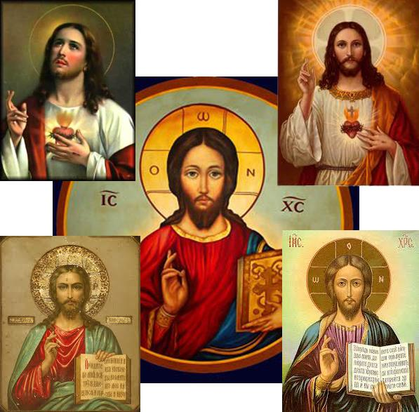
We see in the images above that Jesus’ right hand forms an X by crossing his first two fingers. He then forms the C for Sigma by curving his last two fingers making the C shape. This is the hand gesture of the False Messiah as he identifies himself in plain sight making the XS symbol with his hands, the very symbol Yochanan/John used in Chazon/Revelation 13… http://en.wikipedia.org/wiki/Christogram
In Eastern Christianity, the most widely used Christogram is a four-letter abbreviation, ΙϹΧϹ — a traditional abbreviation of the Greek words for "Jesus Christ” "ΙΗϹΟΥϹ ΧΡΙϹΤΟϹ" with the lunate sigma "Ϲ" common in medieval Greek which we today transliterate as an S. On icons, this Christogram may be split: "ΙϹ" on the left of the image and "ΧϹ" on the right, most often with a sideways S above the letters to indicating that it is a sacred name. Jesus Christ’s right hand is shown in a pose that represents the letters Χ, and Ϲ.
points to the Trinity as well as Christ
The sign of the cross is the mark of Jesus Christ or the mark that is associated with his name!
Jamieson-Fausset-Brown Bible Commentary the mark, or the name—Greek, "the mark (namely), the name of the beast." The mark may be, as in the case of the sealing of the saints in the forehead, not a visible mark, but symbolical of allegiance. Such as the sign of the cross in Popery.
We see above that even Christian Bible commentaries admit that the mark of the beast is the sign of the cross made on the forehead and over the heart. It represents The Trinity. This is the opposing mark to the Shema/Seal of יהוה. Can this “symbol” Yochanan/John used be associated with The Trinity specifically? Remember, Yochanan/John’s warning that “reckoning up the symbol” requires spiritual understanding and INSIGHT or “eyes to see”.
Chazon/Revelation 1318This calls for wisdom (spiritual understanding of the mind). Let the person who has (spiritual) insight reckon up the symbol of the beast that identifies him
The Mark of the Beast as we read in Jamieson-Fausset-Brown Bible Commentary is made over the victim’s forehead. It is the first letter in ΧΡΙΣΤΟS. In fact, the X is the most widely used monogram for Christ and the mark on the forehead of Christians:
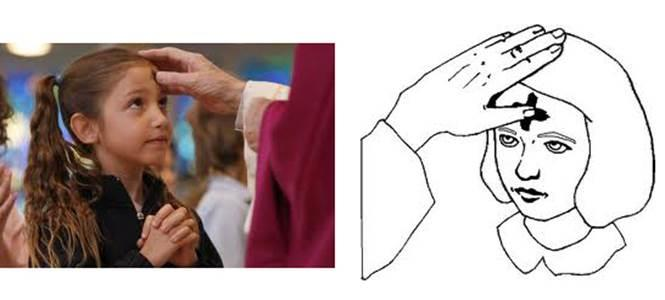
In Christianity the X mark is made on the forehead while repeating “in the name of the Father, the Son, and the Holy Spirit” or X’ES representing the triplicate nature of the pagan Trinity. In making this X mark over the forehead, the mind is sealed with the opposing mark of The Trinity.
We see below that the plural form of X (the mark) is the pictogram of what Yochanan/John wrote in Chazon/Revelation 13. is a pictogram of XES which is “Christ by abbreviation”:
Etymology references Wiktionary:
X | Xs plural form | Xes plural form Origin: Christ by abbreviation, from Ancient Greek Χ (Ch, "(letter chi)"), from Χριστός (Christós,... (26 of 44 etymology words)
The Sign and the Seal of the Beast is the X monogram.
The first letter Chi or is also used widely today as one of the many monograms or symbols for Jesus Christ and is literally The Mark of the Beast Yochanan/John was referring to in Chazon/Revelation 13!
http://en.wikipedia.org/wiki/Christogram
The most commonly encountered Christogram in English-speaking countries in modern times is the X (or more accurately, Greek letter chi) as in the abbreviation Xmas (for "Christmas"), which represents the first letter of the word Christ.
The early Church Fathers attested to the use of the sign of the cross and that it is the Seal or Mark of Christianity; the mark that opposes The Shema or Mark of יהוה.
Tertullian (d. ca. 250) described the commonness of the sign of the cross: "In all our travels and movements, in all our coming in and going out, in putting on our shoes, at the bath, at the table, in lighting our candles, in lying down, in sitting down, whatever employment occupies us, we mark our foreheads with the sign of the cross" (De corona, 30).
St. Cyril of Jerusalem (d. 386) in his Catechetical Lectures stated, "Let us then not be ashamed to confess the Crucified. Be the cross our seal, made with boldness by our fingers on our brow and in everything; over the bread we eat and the cups we drink, in our comings and in our goings out; before our sleep, when we lie down and when we awake;
Gradually, the sign of the cross was incorporated in different Acts of the Mass, such as the three-fold signing of the forehead, lips, and heart as it represents The Trinity. Ash Wednesday is the first day of Lent which is founded in the Babylonian ritual of “Weeping for Tammuz”. Ash Wednesday occurs 46 days before Easter (which is the sacrifice of a pig in honour of the death of Tammuz).
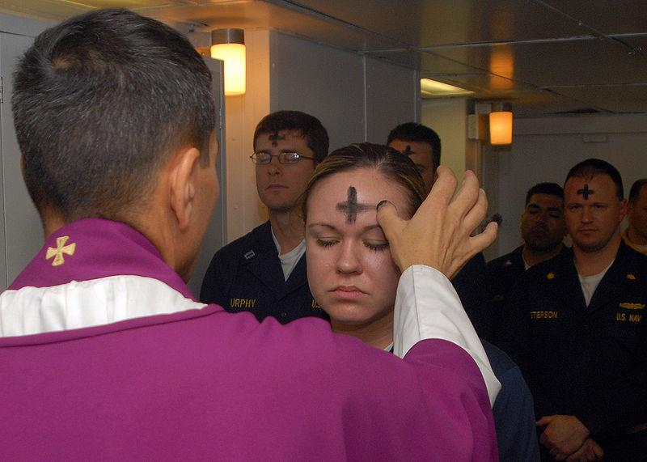
At Masses and services of worship on Ash Wednesday, ashes are imposed on the foreheads of the faithful in the shape of an X. The priest, minister, or in some cases officiating layperson, marks the forehead of each participant with black ashes in the sign of the cross (or X), which the worshipper traditionally retains until it wears off.
is the pictogram of name of JESus as well as Christ identifying “Jesus Christ” by name.
It would take understanding to identify the monogram. However, it requires insight or spiritual eyes to see to recognize this symbol as a pictogram as well as a monogram. The symbol would be a pictogram of the English letters XES.
Pictogram - http://en.wiktionary.org/wiki/pictogram
Strictly speaking, a pictogram represents by illustration, an ideogram represents an idea, and a logogram represents a word: Chinese characters are all logograms, but few are pictograms or ideograms. Casually, pictogram is used to represent all of these: it is a picture representing some concept.
The pictogram is visually associated and visually represents the characters XES in English.
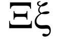
The Greek letter X looks like an X, the Greek letter Xi looks like the English letter E in both upper- and lower-case forms.
The Greek letter Sigma looks like an S giving us the pictogram of the English letters XES in both upper- and lower-case form:
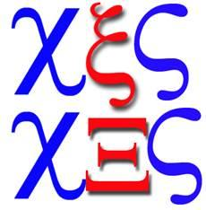
as a pictogram of XES is the plural form of the X monogram of Jesus
Etymology references Wiktionary:
X | Xs plural form | Xes plural form Origin: Christ by abbreviation, from Ancient Greek Χ (Ch, "(letter chi)"), from Χριστός (Christós,... (26 of 44 etymology words)
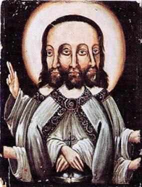
So XES would indicate Jesus in triplicate. Jesus was often represented in this form in antiquity. As a pictogram of XES in English, this symbol uniquely identifies the name ‘Jesus’ as well.
IHS = = XES the pictogram
The first 3 letters of the name Jesus are one of the most commonly used monograms for Jesus today. The most famous is IHS which is a Latin contracted form of IHSous (JESus):
Catholic Encyclopedia - http://www.newadvent.org/cathen/07649a.htm
IHS A monogram of the Jesus Christ. From the third century the names of our Saviour are sometimes shortened, particularly in Christian inscriptions (IH and XP, for Jesus and Christus). In the next century the "sigla" (chi-rho) occurs not only as an abbreviation but also as a symbol.
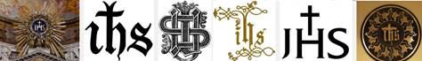
is a pictogram for the English letters XES. XES is the English translation of one of the Greek forms of IHS, the most famous of the symbols of Jesus. XESÚS is a common spelling of Jesus today:
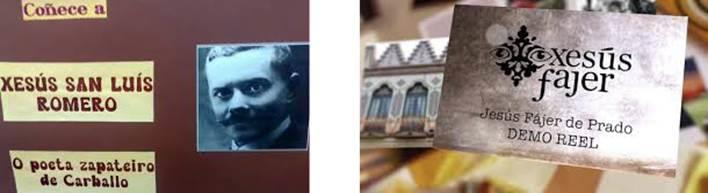
In fact, the name Jesus is written in the Greek Galician dialect as XESus and is of Hebrew origin at the time Yochanan/John wrote Chazon/Revelation. So Yochanan/John, when writing the book of Chazon/Revelation, would naturally have known what we are pointing out.
XESÚS - http://meaningbabynames.com/meaning/Xesus
The baby boy name Xesus is pronounced as KahSahS (*). Xesus is of Hebrew origin and it is used mainly in the Galician language. Xesus is a variation of Jesus (English, Portuguese, Spanish, and German).
XESÚS - http://www.behindthename.com/name/xesu10s
GENDER: Masculine USAGE: Galician Meaning - Galician form of JESUS, used as a personal name.
That symbol Yochanan/John used contains the mark of the beast , the mark of the serpent , the monogram for Christos ΧΡΙΣΤΟS - XS, and the pictogram for the letters XES. XESus is Greek for JESus which in Latin is the most famous symbol for the name Jesus… the symbol IHS. So is pointing us to IHS which is the monogram for the name “Jesus” or : We see below the IHS or symbol with the mark of the beast (the cross) encased within the sun as the very image of sun worship and its god Hesus Horus Krishna (Jesus H. Christ).
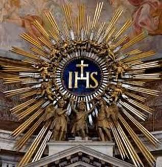
association with Zeus
Yochanan/John also used the ONE monogram that could be associated with Zeus. Jesus in Latin means “Hail Zeus”. In Greek, the first of these three letters used by Yochanan/John also takes the sound of a 'Z' - as in Xenephen or Xylophone. The first and last Greek letters of this formula, may therefore also be referring to the first and last letters of the name 'Zeus' again pointing to Jesus. Keeping in mind that Constantine named his new god “Jesus” after the god of the Pantheon Zeus as was the custom in pagan Rome. Just like Hebrews used the poetic form of the name of Elohim (Yahu) in contracted sentence names to give glory to יהוה, so did the Greeks as they ended names and cities using “sous/sus/us” after their own god Zeus. Take for example the name of Julius Caesar “Gaius Julius Caesar” or the name of the Roman Emperor Constantine who literally created Christianity “Flavius Valerius Aurelius Constantinus Augustus”.
The suffix “us” was added to Greek and Roman names to give glory to Zeus where Yah or Yahu was added to Hebrew names to give glory to יהוה.
“It is known that the Greek name endings with sus, seus, and sous were attached by the Greeks to names and geographical areas as means to give honour to their supreme deity, Zeus." Dictionary of Christian Lore and Legend
What we have learned so far is that out of all the various symbols constructed with the Greek letters of Christos, this ONE version used by Yochanan/John specifically identifies Jesus Christ. This one symbol incorporates the sea serpent (the beast of the sea), it identifies his mark , his monogram XS, and a pictogram in English XES of his name which is his IHS monogram. Below is Chazon/Revelation 13 in its true meaning:
Chazon/Revelation 13 - The Beast out of the Sea 13 The dragon stood on the shore of the sea. And I saw a beast coming out of the sea (sea serpent )…17 so that they could not buy or sell unless they had the mark ( ), which is the name of the beast or (rather) the symbol of its name. 18 This calls for wisdom (to discern the Christogram). Let the person who has (spiritual) eyes to see reckon up the (pictogram of the) symbol of the beast that identifies him, for it is the symbol of a man.
That symbol is
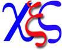
It should be obvious to the reader why we are warned not to add to or subtract from His Word. The translators did both in Chazon/Revelation 13; they subtracted the symbol of Jesus Christ and added the number 666 in its place. This caused confusion and, as Satan so planned, deflects our attention away from his “son of perdition”. People think “666” is the mark on the forehead when that number has nothing at all to do with the topic. That mark is the “X” symbol or monogram. Now it requires “wisdom and insight” to figure it out due to uninspired translation errors. This is one of the “seals” over the book of Chazon/Revelation that only now has been broken.
They who don’t have the mark could not buy or sell
In Chazon/Revelation 13:17 we see that those who do not take the mark of Jesus Christ ( ) are prohibited from commerce within his realm. Is this referring to some futuristic physical “mark” or biochip in our forehead and hand as is being taught today? Or have we simply overlooked the obvious because we are unwilling to acknowledge the Jesus Christ is the beast and Christianity is the second beast? If we simply take an honest look throughout history, we see that Christianity has outlawed “buying and selling” specifically for all those who do not bow down to the authority of The Pope and accept the specific mark on their forehead .
The Book of Chazon/Revelation is misunderstood by many as applying only to the last 7 years of “Tribulation” when in fact is was given 2000 years ago and covers a 2000 year span of Christian dominance. We see below the Mark of the Beast is the sign of the Cross and those who do not have that mark were forbidden to “buy or sell” throughout history and the X is the “seal on the forehead”:
Jamieson-Fausset-Brown Bible Commentary the mark, or the name—Greek, "the mark (namely), the name of the beast." The mark may be, as in the case of the sealing of the saints in the forehead, not a visible mark, but symbolical of allegiance. So the sign of the cross in Popery. The Pope's interdict has often shut out the excommunicate from social and commercial intercourse.
Clarke's Commentary on the Bible And that no man might buy or sell, save he that had the mark – "If any," observes Bishop Newton, “dissent from the stated and authorized forms (of Christianity); they are condemned and excommunicated as heretics: and in consequence of that they are no longer suffered to buy or sell; they are interdicted from traffic and commerce, and all the benefits of civil society.
Roger Hoveden relates of William the Conqueror, that he was so dutiful to the pope that he would not permit any one in his power to buy or sell anything whom he found disobedient to the apostolic see (The Pope).
The canon of the council of Lateran, under Pope Alexander III., made against the Waldenses and Albigenses, enjoins, upon pain of anathema, that no man presumes to entertain or cherish them in his house or land, or exercise traffic with them (that do not follow Papal authority).
The synod of Tours, in France, under the same pope, orders, “under the like in termination, that no man should presume to receive or assist them, no, not so much as hold any communion with them, in selling or buying; that, being deprived of the comfort of humanity they may be compelled to repent of the error of their way."
It was ordered by a bull of Pope Martin the Fifth, “that no contract should be made with such, and that they should not follow any business and merchandise: save he that had the mark; took the oath to be true to the pope, or Madea public profession of the Popish religion: or the name of the beast; Papists, so called from the pope”. “In the tenth and eleventh centuries the severity against the excommunicated was carried to so high a pitch, that nobody might come near them, not even their own wives, children, or servants; they forfeited all their natural legal rights and privileges, and were excluded from all kinds of offices.”
Now we know the identity of the first beast that it is the “image of a man” we have elevated in our hearts as God incarnate above יהוה. We actually “invite Jesus into our hearts” and sit him on the throne and sacrifice a pig on יהוה’s altar every Easter! This is The Abomination of Desolation… Yochanan/John identified that image of a False Messiah by his mark, his monogram, and by a pictogram and the serpent who give this image power and authority.
The second beast is easily identified… it is Christianity. It is the religion that evolved around the first beast that causes the Earth to worship . Remember that Christianity is the largest religion on Earth. It is the very one that sites on 7 hills etc. and by definition is the “widest gate” being the largest religion on Earth. “The True Way” is the NARROW GATE and very few find it! Simple logic (even without the proof in this book) should have told us the largest religion is not the “chosen few” remnant spoken of in scripture. It is not the “narrow gate” that leads to salvation.
When you insert the true identities of the first and second beast into passages in The Book of Chazon/Revelation those passages come alive and clearly point to only one religion in the history of humanity… Christianity. The religion that bears no resemblance to that described in Scripture and is a carbon copy of Mystery Babylon.
Excerpts from The Anti-Christ Revealed